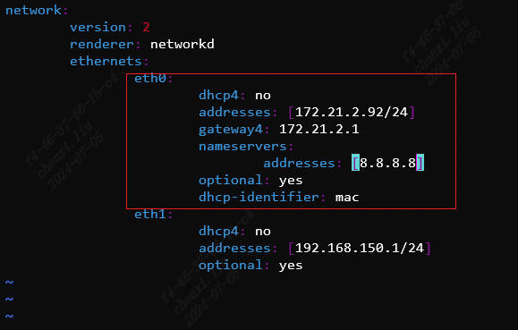
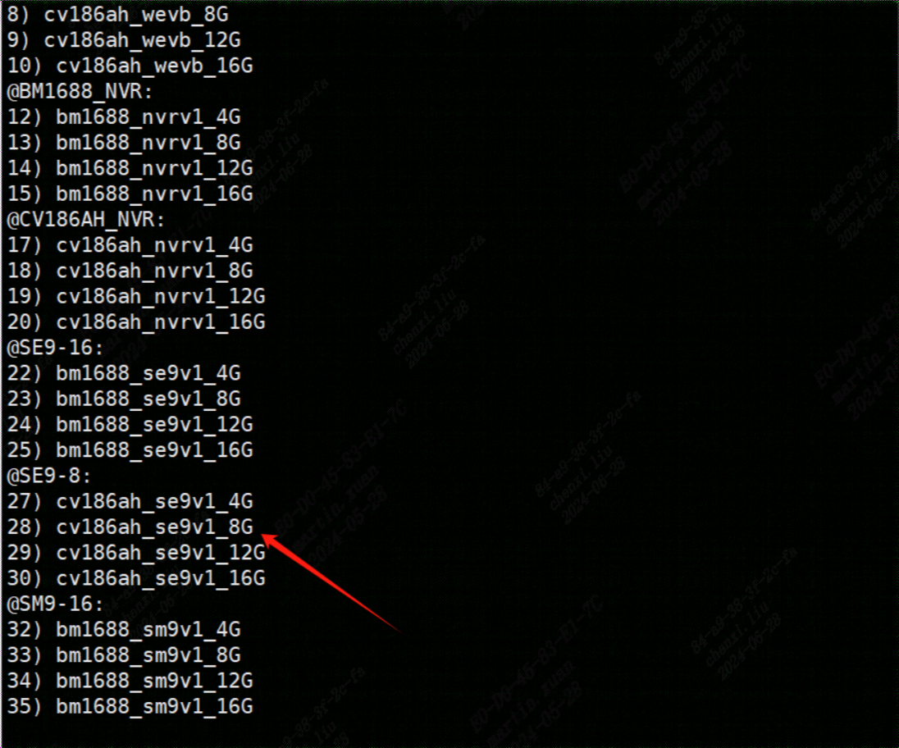
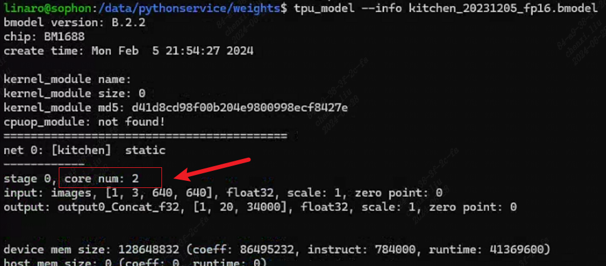
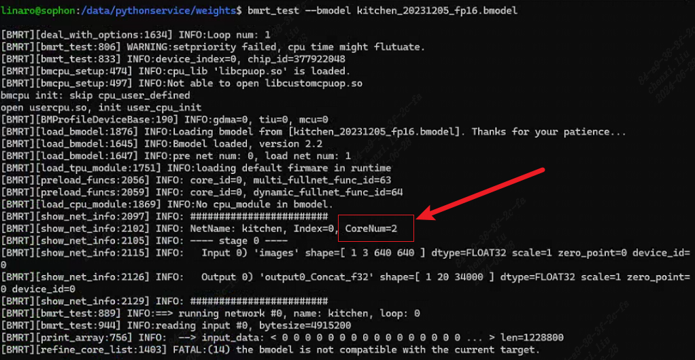

3.3.3. SE9使用问题¶
3.3.3.1. SE9常用命令参考有哪些？¶
答：
用于获取设备基本信息，包括IP地址、MAC 地址、系统开机时间、板卡温度、平台结温，NPU使用率等 |
|
查看当前设备平台结温 |
|
查看设备启动到当前的运行时长（秒） |
|
查看平台型号 |
|
用于查看设备版本信息 |
|
用于获取设备温度信息，包括板卡温度、平台结温等 |
|
用于设置静态IP |
|
用于设置动态IP |
|
检测驱动是否安装 |
|
查看TPU使用率 |
|
查看VPU使用率(VPU:Video Subsystem, 用于h264/h265/jpeg编解码) |
|
查看VPSS使用率(VPSS:也称为VPP,属于CV SubSystem) |
|
用于获取产品OEM信息 |
|
查看VPSS预留及当前使用内存的情况 |
|
查看TPU预留及当前使用内存的情况 |
|
模型结果对比测试 |
|
模型可用性测试 |
|
查看bmodel信息 |
|
合并bmodel文件 |
|
分解bmodel文件 |
|
查询系统内存 |
|
3.3.3.2. SE9如何加装存储？¶
答：M.2 SSD 支持容量2TB(已验证)，为非标配配件，需要用户根据所需对接的运营商自行采购。
已验证2T 以下容量（额定功耗≤3W，功耗超出时可联系我司销售购买专用散热块）
M.2 SSD 接口如图：
安装完成后，挂载硬盘后，可以正常使用。 具体请参考《SE9用户指导手册》4.4章节选件安装和6.3章节硬盘挂载
3.3.3.3. SE9如何加装4G/5G和LTE天线？¶
答：参考《SE9用户指导手册》第四章“操作与安装”的LTE天线章节
3.3.3.4. 在哪里添加SE9的4G/5G、WIFI、SATA模块？¶
答：
3.3.3.5. SE9如何刷新固件？¶
答：
使用sdcard卡刷方式。参考《SE9用户指导手册》6.1系统升级章节。 注意，刷机之后，设备ip会改变，需要重新配置网络。
3.3.3.6. SE9如何使用串口调试工具进行调试？¶
答：准备一条USB Type-c 接口的数据线，在笔记本电脑或台式电脑上安装串口驱动cp210x(https://www.silabs.com/developers/usb-to-uart-bridge-vcp-drivers?tab=downloads)，使用USB Type-c线连接SE9的TYPE- C口与电脑，设置波特率115200。再给SE9上电，进入串口通讯界面，即可开始对SE9进行操作。原始账号和密码默认均为linaro。
3.3.3.7. 如何连接SE9？¶
答：有两种方式查看SE9 IP。
在显示器上直接查看IP的方式：SE9连上网线，插上HDMI线，HDMI连接显示器，在显示器上查看IP，再使用ssh工具连接SE9；
通过SE9 LAN口连接查看IP的方式：
SE9盒子有两种配置方式：
方式1：SE9直连电脑：
连接SE9 LAN口至电脑端LAN口
配置电脑ip地址至192.168.150.1同网段下，例如ip设为192.168.150.2，子网掩码设为255.255.255.0，默认网关设为192.168.150.254
ssh至192.168.150.1，初始账户名密码均为linaro
方式2：SE9通过路由器或交换机连接：
连接SE9 LAN口至路由器或交换机
从路由器或交换机连接至电脑端网口
配置电脑ip地址至192.168.150.1同网段下，例如ip设为192.168.150.2，子网掩码设为255.255.255.0，默认网关设为192.168.150.254
ssh至192.168.150.1，初始账户名密码均为linaro
查看SE9盒子的WAN口ip地址，以用来远程连接
3.3.3.8. SE9如何修改IP？¶
答：WAN IP地址修改有多种方式
使用ifconfig命令配置IP地址
使用``bm_set_ip命令``，即``bm_set_ip eth0 ip netmask gateway dns``
使用netplan工具来配置网络接口的静态IP地址
修改/etc/netplan/01-netcfg.yaml：
 将上图内容保存后，应用配置
sudo netplan apply
这将把eth0接口配置为静态IP：172.21.2.92，同时制定了网关和DNS服务器
参考《SE9用户指导手册》5.2.3.3网络设置
3.3.3.9. 如何修改内存布局？¶
答：《BM1688_CV186AH SOPHONSDK开发指南》附录，SoC模式内存修改工具 注意： BM1688、CV186AH 平台中VPU/VPP/JPU共用一个heap。
3.3.3.10. 如何制作SE9刷机包？¶
答：有两种方式，一种是通过github代码构建安装包，另一种是基于sdcard.tgz基础软件包定制化。
参考《算能边缘产品BSP开发参考手册》7.2如何通过github代码构建安装包
使用bm1688_socbak工具制作(bm1688_socbak使用说明，或参考：《BM1688_CV186AH SOPHONSDK开发指南》附录，微服务器定制化软件包)
sudo su 进入root权限
创建/socrepack目录，并且将外部存储设备挂载到该位置
下载最新的socbak工具<https://sophon-file.sophon.cn/sophon-prod-s3/drive/23/11/16/18/socbak.zip>， 然后将socbak.sh脚本拷贝到该目录下
cd到这个目录下，./socbak.sh执行环境镜像
下载最新的bm1688_repack包解压并进入（<https://sophon-file.sophon.cn/sophon-prod-s3/drive/24/02/23/20/bm1688_repack.tgz>）
建立目录pack,然后将原始刷机包解压到这个目录下
cd到depack.sh文件同目录,然后执行./depack.sh脚本进行解包
生成的各个分区压缩包会在update目录下生成,此时将socbak生成的所有文件都拷贝到这个目录下
修改完毕后cd到enpack.sh文件同目录,然后执行./enpack.sh sdcard 或者./enpack.sh tftp 命令进行打包
生成的新的刷机包在update/sdcard和update/tftp
3.3.3.11. SE9盒子上有哪些服务，是做什么的？¶
答：
服务 |
说明 |
SophonHDMI |
HDMI显示 |
sophliteos |
设备管理软件前端，含有基础运维功能 |
bmssm |
设备管理软件，采用目录的形式管理资源，通过HTTP协议管理所有的系统的软硬件信息 |
可以使用如下命令，启动一个服务
systemctl start <service_name>
3.3.3.12. SE9设备是否有看门狗？¶
答：watchdog默认是在内核开启的。使用这命令开watchdog：
sudo busybox watchdog -t 3 -T 5 /dev/watchdog0
其中-t 是是喂狗周期，-T是时长。 请参考《算能边缘产品BSP开发参考手册》—-5.12Watchdog 操作指南
3.3.3.13. 如何查看SN/MAC？¶
- 答：
cat /factory/OEMconfig.ini
3.3.3.14. 查看内存情况¶
- 答：
free -h sudo cat /sys/kernel/debug/ion/cvi_vpp_heap_dump/summary | head -3 sudo cat /sys/kernel/debug/ion/cvi_npu_heap_dump/summary | head -3
3.3.3.15. 如何使用sophon-ffmpeg读取USB摄像头视频流？¶
答：使用sophon-ffmpeg读取USB摄像头视频流，具有硬件加速功能
ffmpeg -f v4l2 -pix_fmt mjpeg -s:v 1920x1080 -r 30 -zero_copy 0 -c:v jpeg_bm -i /dev/video6 -is_dma_buffer 1 -vf scale_bm=format=yuv420p:zero_copy=1 -r 25 -c:v h264_bm -b:v 3M output.mp4
3.3.3.16. 如何使用ffmpeg读取alsa音频？¶
答：ALSA为软件功能，无硬件加速功能。
ffmpeg -f alsa -i hw:0 -t 30 out.wav
3.3.3.17. 如何使用python版sophon-opencv？¶
答：
export PYTHONPATH=$PYTHONPATH:/opt/sophon/sophon-opencv-latest/opencv-python
3.3.3.18. 如何将bm_image转为cv.Mat？¶
答：
Python中cv.Mat就是一个 numpy.array, 可以参考sail中的
sail.BMImage.asmat()接口；C++中使用cv::bmcv::toMat()接口；
3.3.3.19. sophon-opencv的版本？¶
答：基于开源opencv 4.8.0版本改造。1684(x)上是基于4.1.0
3.3.3.20. sophon-ffmpeg的版本？¶
答：基于开源ffmpeg 6.0.0版本改造。1684(x)上是基于5.0.0
3.3.3.21. GPIO使用？¶
答：参考BSP开发参考手册5.10章节和SE9产品手册6.5章节
#配置 pinmux
cvi_pinmux w I2S0_SCLK/GPIO0
cvi_pinmux w I2S0_WSI/GPIO1
cvi_pinmux w I2S0_SDI0/GPIO2
cvi_pinmux w I2S0_SDI1/GPIO3
#导出 gpio
echo 480 > /sys/class/gpio/export
echo 481 > /sys/class/gpio/export
echo 482 > /sys/class/gpio/export
echo 483 > /sys/class/gpio/export
#设置方向
echo out > /sys/cla ss/gpio/gpio480/direction
echo out > /sys/class/gpio/gpio481/direction
echo in > /sys/class/gpio/gpio482/direction
echo in > /sys/class/gpio/gpio483/direction
#输出高
echo 1 > /sys/class/gpio/gpio480/value
echo 1 > /sys/class/gpio/gpio481/value
#输出低
echo 0 > /sys/class/gpio/gpio480/value
echo 0 > /sys/class/gpio/gpio481/value
#读取输入
cat /sys/class/gpio/gpio482/value
cat /sys/class/gpio/gpio483/value
3.3.3.22. 继电器使用方法¶
答：继电器常态COM接NC，COM接NO时系统短路，掉电重启。继电器：GPIO198。GPIOOUT1：GPIO0。GPIOOUT2：GPIO1。
# 配置pinmux
cvi_pinmux -w PAD_VIVO0_D13/GPIO131
# 导出
echo 355 > /sys/class/gpio/export
# 设置方向
echo out > /sys/class/gpio/gpio355/direction
# 输出高
echo 1 > /sys/class/gpio/gpio355/value
# 输出低
echo 0 > /sys/class/gpio/gpio355/value
#读取输入
cat /sys/class/gpio/gpio355/value
3.3.3.23. CAN使用方法¶
答：凤凰端子的L 和H 接口，对应CAN 的CAN_L 和CAN_H
设置can 波特率 ip link set can0 up type can bitrate 250000
打开can 设备 ifconfig can0 up
发送扩展帧 cansend can0 -i 0x55 0x12 0x23 0x34
如果是接收的话就做如下操作
ifconfig can0 down
ifconfig can0 up
candump can0
3.3.3.24. 485/232使用方法？¶
答：凤凰端子的A 和B 端口对应485 的接口 凤凰端子的TX 和RX 对应RS232 的接口
其中UART1 是485，UART3 是232
Set Pinmux for UART1 and UART3
cvi_pinmux -w UART1_TX/UART1_TX
cvi_pinmux -w UART1_RX/UART1_RX
cvi_pinmux -w PWR_UART_TX/UART3_TX
cvi_pinmux -w PWR_UART_RX/UART3_RX
Configure UART
stty -F /dev/ttyS1 ispeed 115200 ospeed 115200 cs8 -parenb ixoff
stty -F /dev/ttyS3 ispeed 115200 ospeed 115200 cs8 -parenb ixoff
485 发送
echo 1234 > /dev/ttyS1
485 接收
cat /dev/ttyS1
232 发送
echo 1234 > /dev/ttyS3
232 接收
cat /dev/ttyS3
3.3.3.25. 使用TPU-MLIR，设置混精度的层名后，混精度未生效？¶
答：设置不需要量化的层名时需要使用mlir2onnx工具把.mlir转成.onnx 后，查看并设置对应层名。
备注
若使用原始.onnx文件的层名，有可能设置无效。mlir2onnx工具使用如下：mlir2onnx.py -m xxx.mlir -o revert.onnx
3.3.3.26. 使用TPU-MLIR，FP32/FP16模型推理可以得到正确结果，INT8模型无法得到正确结果？¶
答：首先确保代码无问题，可以兼容FP32/FP16/INT8模型，再检查量化精度问题。尝试混合精度量化。其中，设置不需要量化的层名时需要使用mlir2onnx工具把.mlir转成.onnx 后，查看并设置对应层名。
备注
若使用原始.onnx文件的层名，有可能设置无效。
请参考 https://github.com/sophgo/sophon-demo/blob/release/docs/Calibration_Guide.md
3.3.3.27. 使用TPU-MLIR，如何混精度？¶
答：参考《TPU- MLIR快速入门指南.pdf》7.3局部不量化章节。使用fp_forward工具生成混精度表以提升精度。其中，fpfwd_inputs参数表示设置当前层及之前的网络层不量化，fpfwd_outputs参数表示设置当前层及之后的网络层不量化，fpfwd_blocks参数表示设置当前层不量化。其中，设置不需要量化的层名时需要使用mlir2onnx工具把.mlir转成.onnx 后，查看并设置对应层名。
备注
若使用原始.onnx文件的层名，有可能设置无效。
请参考 https://github.com/sophgo/sophon-demo/blob/release/docs/Calibration_Guide.md
3.3.3.28. 工厂发出的SE9-8 8G版本和SE9-16 16G版本，查询SE9-8的内存是4G，SE9-16的内存是8G。这是为什么？¶
答： 盒子出厂默认的DTS是标准配置(SE9-8是4G，SE9-16是8G)，需要选择对应的DTS配置。
先刷机升级到SDK1.6
进入到系统里面，执行dts_tool 命令
 输入对应数字(SE9-8选28，SE9-16选25)
重启
3.3.3.29. 客户拿到盒子后，使用bmrt_test –bmodel xxx.bmodel报错¶
答：盒子出厂的版本有些问题，重新刷机后解决。
3.3.3.30. SE9接上HDMI后，为什么没有出现ubuntu的桌面？¶
答：SE9默认不安装ubuntu界面，如果需要ubuntu桌面系统，可以手动安装。
# 建议安装较轻量的xfce4
# 桌面显示
sudo dpkg -r qt5-base
sudo apt update
# 安装xfce4时选择lightdm
sudo apt install xfce4
sudo systemctl disable SophonHDMI
sudo systemctl disable SophonHDMIStatus
sudo reboot
# 如果遇到hdmi花屏则执行
sudo su
echo off > /sys/class/drm/card0/card0-DSI-1/status
exit
注意：ubuntu 界面会占用比较大的存储/内存空间。
3.3.3.31. SE9-8设备使用bm-smi查看TPU频率(TPU_P Currclk)是450M，bmrt_test运行模型推理，较SE9-16速度慢的原因¶
答：SE9-8设备老旧，需要做一个升级：
设备接上串口，设置波特率为115200，把下载的文件(文件请联系算能技术支持获取)单独放到SD卡(fat32格式)的根目录下，之后将SD卡插入设备卡槽，重新上电。改完了之后串口会输出如下打印：
如果已经升级完毕后再执行步骤2，则会出现如下打印
3.3.3.32. SE9的SDK下载链接¶
答：SE9的SDK下载链接可以在官网找到，官网链接为 https://developer.sophon.cn/ 其中，BM1688&CV186AH下的SDK为SE9能够使用的SDK，它与BM1684&BM1684X不是同一套
3.3.3.33. 如何查看模型属于单核模型还是双核模型？¶
答：有两种方式
方式1：使用tpu_model –info xxx.bmodel

方式2：使用bmrt_test –bmodel xxx.bmodel

3.3.3.34. 双核模型在SE9-8(CV186AH)上运行会如何？¶
答：双核模型没法运行在SE9-8(CV186AH)上。如果使用bmrt_test –bmodel xxx.bmodel，会报FATAL:(14)the bmodel is not compatible with the current target.
3.3.3.35. sophon-opencv和sophon-ffmpeg具体做了哪些硬件加速？¶
答:sophon-opencv API 包含了所有FFMPEG 支持的硬件及软件视频编解码接口（视频底层通过FFMPEG 支持，这部分功能完全覆盖），硬件加速的JPEG 编解码接口，软件支持的其他所有图像编解码接口（即所有OPENCV 开源支持的图像格式），部分硬件加速的图像处理接口（指用图像处理VPP 模块加速的缩放、crop、padding、色彩转换功能），所有软件支持的OPENCV 图像处理功能。其中，硬件模块加速对图片和视频的处理主要是：
多媒体模块：硬件加速JPEG 编码解码和Video 编解码操作。
BMCV 模块：硬件加速对图片的resize、color conversion、crop、split、linear transform、nms、sort 等操作。
NPU 模块：硬件加速对图片的split、rgb2gray、mean、scale、int8tofloat32 操作。
sophon-ffmpeg API包含了所有硬件加速的视频/图像编解码接口，所有软件支持的视频/图像编解码接口（即所有FFMPEG 开源支持的格式），通过bm_scale filter 支持的部分硬件加速的图像处理接口（这部分图像处理接口，仅包括用硬件图像处理VPP 模块加速的缩放、crop、padding、色彩转换功能）。其中，通过硬件接口，提供了如下模块：硬件视频解码器、硬件视频编码器、硬件JPEG 解码器、硬件JPEG 编码器、硬件scale filter、hwupload filter、hwdownload filter 参考《算能边缘产品MULTIMEDIA开发参考手册》2.2SOPHGO OpenCV使用指南和2.3SOPHGO FFMPEG使用指南
3.3.3.36. 使用docker搭建测试环境¶
答：参考《LIBSOPHON使用手册》即 https://doc.sophgo.com/sdk-docs/v23.09.01-lts/docs_latest_release/docs/libsophon/guide/html/4_docker_usage.html#docker
《SOC模式交叉编译docker环境搭建》参考：https://developer.sophgo.com/thread/682.html
3.3.3.37. 使用bmcv的bmcv_image_warp_perspective函数，有锯齿现象¶
答：BM1688 或者 CV186AH平台上，使用bmcv进行投射变换时，可能会在变换角度较大时出现锯齿现象。为了获得更好的精度效果，建议使用opencv的warp函数在CPU上进行计算。
3.3.3.38. 如何使用opencv在图片上写中文字符？¶
答：请参考https://developer.sophgo.com/thread/604.html， 目前bmcv的bmcv_image_put_text只支持写英文字符。
3.3.3.39. 如何查看设备ddr内存总量？¶
答：为 free -h 和bm-smi的内存数据总和。 其中bm-smi的内存数据为NPU+VPU/VPP/JPU的内存，图示见 SE9内存映射分区表。
3.3.3.40. 如何查看SE9 SM9的cpu、ddr频率?¶
看平台简介宣传材料
如下命令
sudo cat /sys/kernel/debug/clk/clk_summary |grep cpu
sudo cat /sys/kernel/debug/clk/clk_summary |grep tpu
sudo cat /sys/kernel/debug/clk/clk_summary |grep ddr
3.3.3.41. 如何判断SD卡刷机完成？¶
SE9：连接串口，打印完成
SM9开发者套件：连接串口，打印完成， 或者底板绿灯闪烁
3.3.3.42. SD卡不能成功刷机？¶
检查SD卡格式，是否格式化成FAT32格式
检查SD卡内容，是否所有刷机文件内容解压后放在SD卡根目录中。
将SD卡插上设备，检查分区格式：
# 输入如下命令，输出无报错，则分区正常
ls /dev/mmcblk1p1